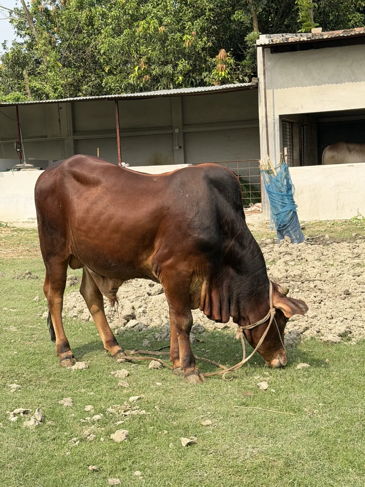
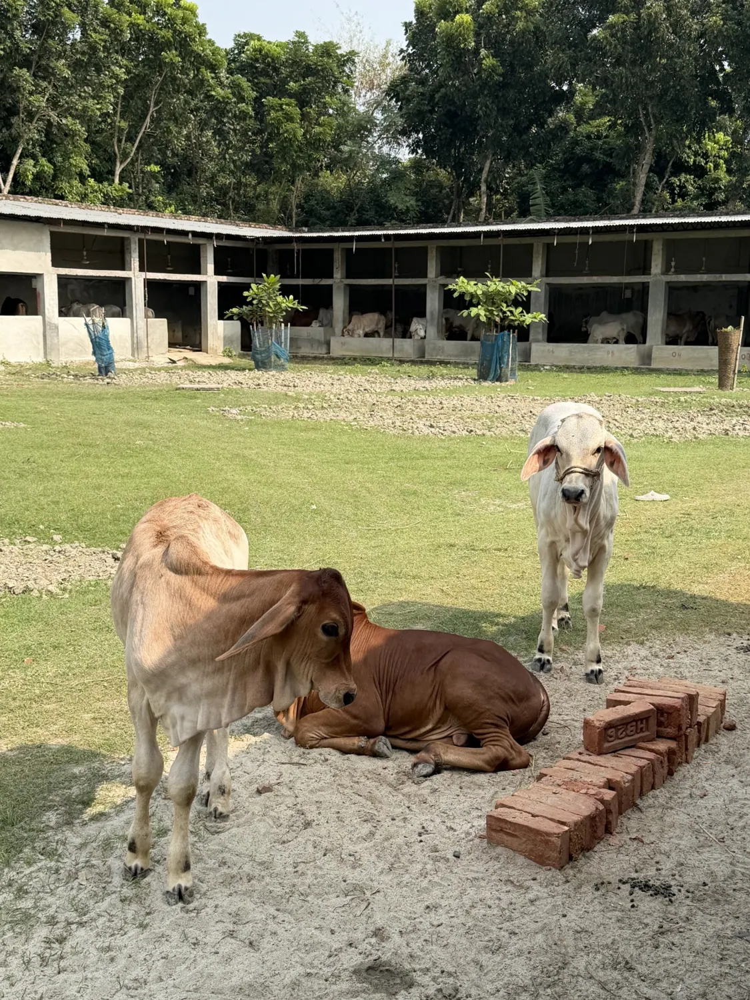

BK AGRO · MEHERPUR
Live Cattle at Our Farm
BK Agro-র গরু আর খামারের পরিবেশ ঘুরে দেখুন। আমাদের গরু খায় নিজেদের জমিতে চাষ করা কাঁচা ঘাস, সাথে খড় আর ভুসি। আমরা কোনো বাণিজ্যিক গো-খাদ্য ব্যবহার করি না।



Our Farm Environment
খোলা জায়গা, পরিষ্কার ঘর আর প্রতিদিনের যত্নে আমাদের গরু বড় হয়। গরুর দাম বাজারদর অনুযায়ী — কোন গরু পাওয়া যাবে আর দাম কত, জানতে আমাদের সাথে যোগাযোগ করুন।